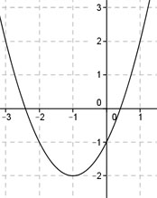

Aufgabe 59 Wie lautet die Funktionsgleichung der dargestellten verschobenen Normalparabel?  Scheitelpunkt abgelesen: S(-1|-2): xS = -1 , yS = -2 In die Scheitelpunktform eingesetzt: y = (x – xS)2 + yS y = (x – (-1))2 - 2 y = (x + 1)2 - 2 y = x2 + 2x + 1 - 2 y = x2 + 2x - 1